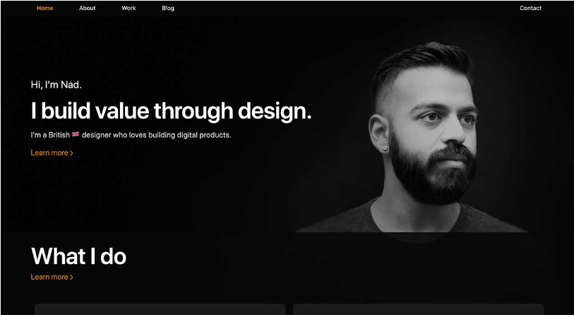
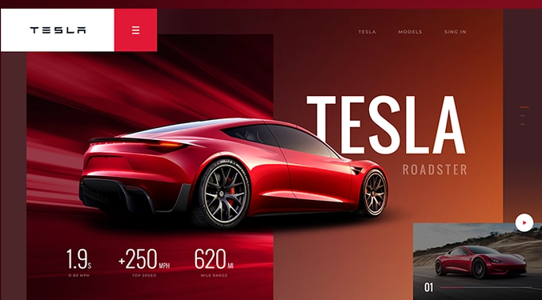
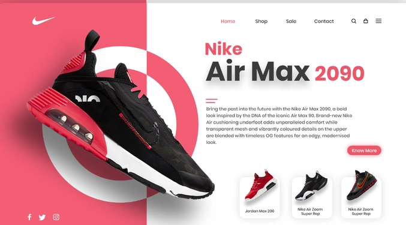

I design and make awesome personalized
portfolios. This portfolios are of people
from people from different careers including
Developers, Doctors, Business owners,
Engineers and more.
I make sure your Portfolio is presentable to help
you get a job quickly.

As a developer, I specialize in creating
effective landing pages that are designed to convert
visitors into customers. I use my technical expertise and
design skills to create pages that are user-friendly, visually
appealing, and optimized for search engines.

As a developer, I specialize in creating professional
and effective business websites that meet the unique needs of each client. With my expertise in web development technologies and design principles, I can help businesses establish a strong online presence, increase their visibility, and drive growth. From customizing templates to creating unique designs from scratch, I work closely with clients to ensure their website accurately represents their
brand and appeals to their target audience
As a developer specializing in school website design, I offer comprehensive website solutions tailored to meet the unique needs of educational institutions. My services include creating user-friendly interfaces, intuitive navigation, and responsive design to ensure seamless browsing on desktop and mobile devices. I prioritize incorporating features such as calendars, news feeds, and directories to keep students, parents, and staff informed and engaged. I also ensure the website is optimized for search engines to improve its visibility and accessibility. With my expertise, I can help schools establish a strong online presence and foster a positive image in the community.